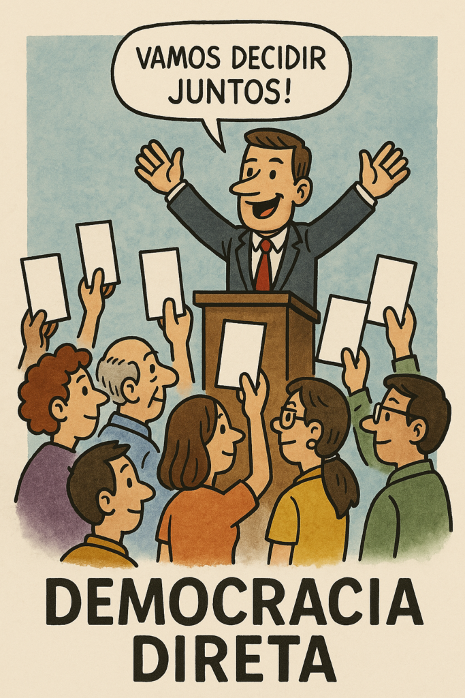

2025-04-05 20:30:34

Democracia Direta: Do Palco ao Povo é uma obra satírica, lúcida e profundamente atual, que desmonta com humor e espírito crítico o teatro da política representativa moderna. Francisco Gonçalves conduz-nos por 15 capítulos e um epílogo recheados de ironia inteligente, poesia cívica e propostas ousadas, lançando um olhar provocador sobre partidos, campanhas, promessas e o papel do cidadão.
Mais do que crítica, este livro é uma proposta: um manual de instruções para uma nova democracia, mais participativa, transparente e humana — com ferramentas práticas, tecnologia, assembleias populares e, acima de tudo, confiança no poder do coletivo.
Combinando o riso à reflexão, Democracia Direta: Do Palco ao Povo é uma leitura essencial para quem acredita que a política deve ser feita com as pessoas — e não apenas para elas.
Créditos para o ChatGPT na estruturação dos capitulos, na investigação do tema e na criação das imagens contidas no Livro.
Descarregue o Livro aqui na versão em PDF: